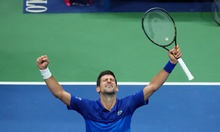
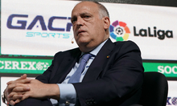

-
Chức vô địch Copa America hè 2021 giúp Lionel Messi xua tan những chỉ trích mà truyền thông Argentina dồn dập nhắm vào anh những năm qua.
- 
MỸ - Novak Djokovic thắng ngược Matteo Berrettini 5-7, 6-2, 6-2, 6-3 trong trận tứ kết Mỹ Mở rộng hôm 8/9, để gặp Alexander Zverev tại bán kết.
- 
PHÁP - Theo Tổng thư ký PSG Victoriano Melero, Chủ tịch Javier Tebas nên tập trung điều hành La Liga thay vì xúc phạm PSG và Ligue 1.
 LITHUANIA Thầy trò ông Phạm Minh Giang tìm hiểu về công nghệ VAR để chuẩn bị bước vào tranh tài ở VCK FIFA futsal World Cup 2021.
LITHUANIA Thầy trò ông Phạm Minh Giang tìm hiểu về công nghệ VAR để chuẩn bị bước vào tranh tài ở VCK FIFA futsal World Cup 2021.
-
MỸ - Tay vợt 18 tuổi Emma Raducanu trở thành người đầu tiên trong Kỷ nguyên Mở vào bán kết Mỹ Mở rộng sau khi chơi vòng loại.